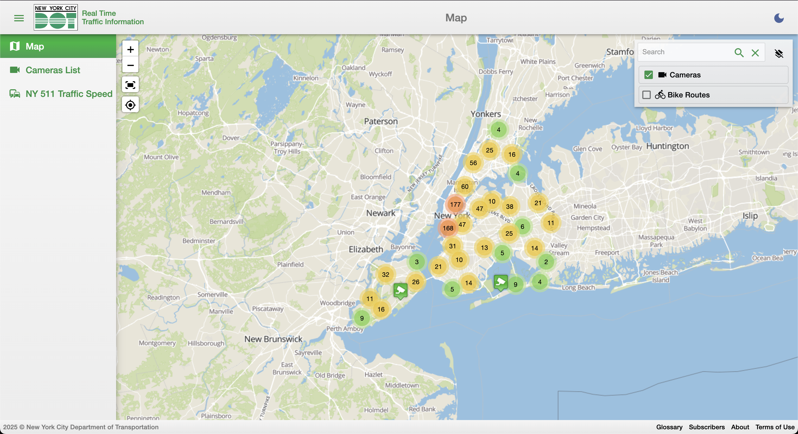
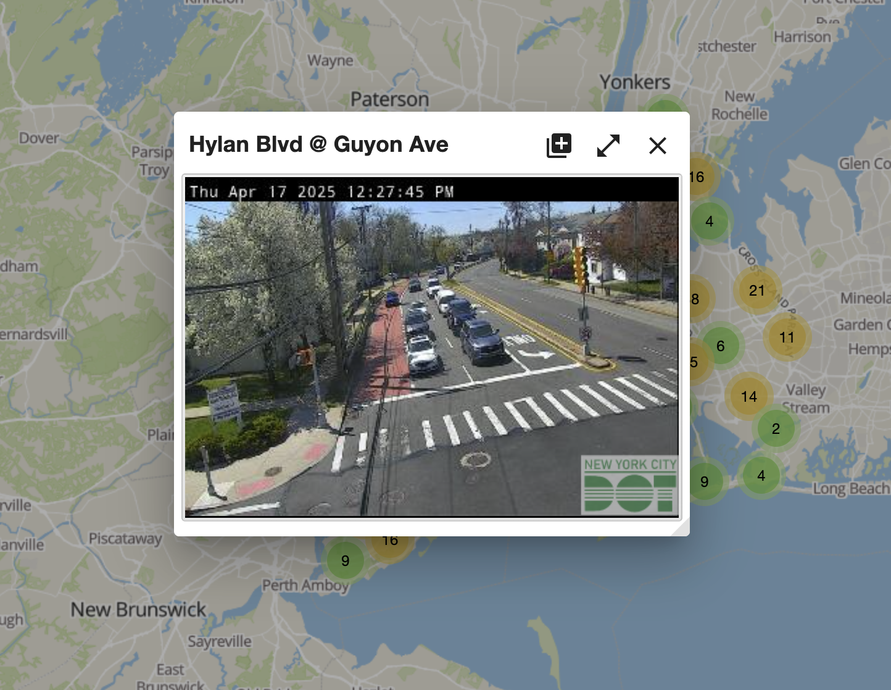
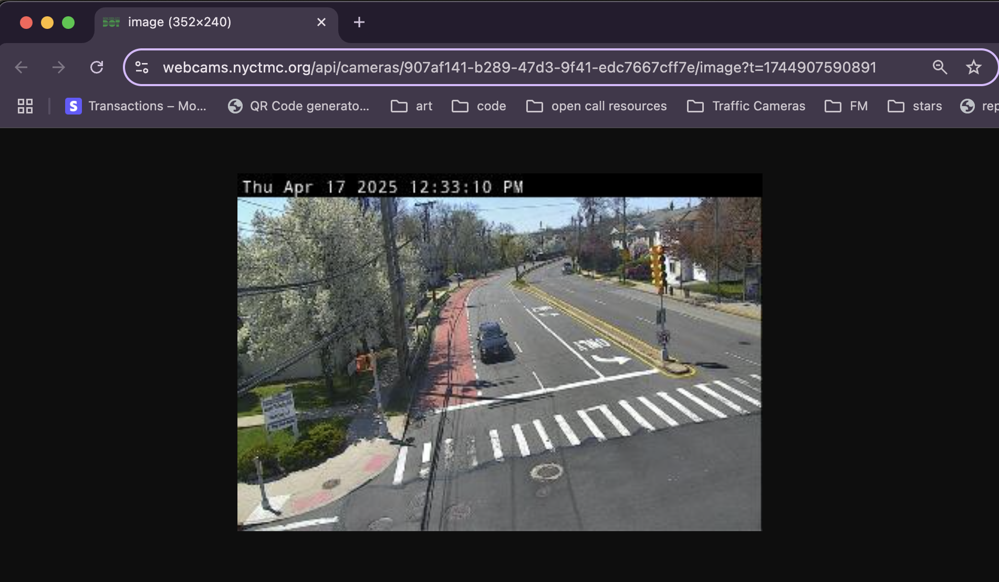
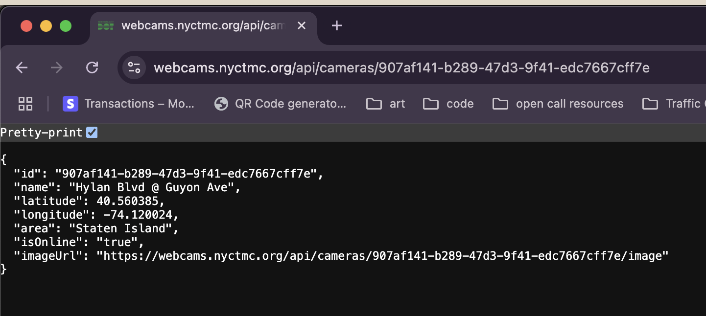
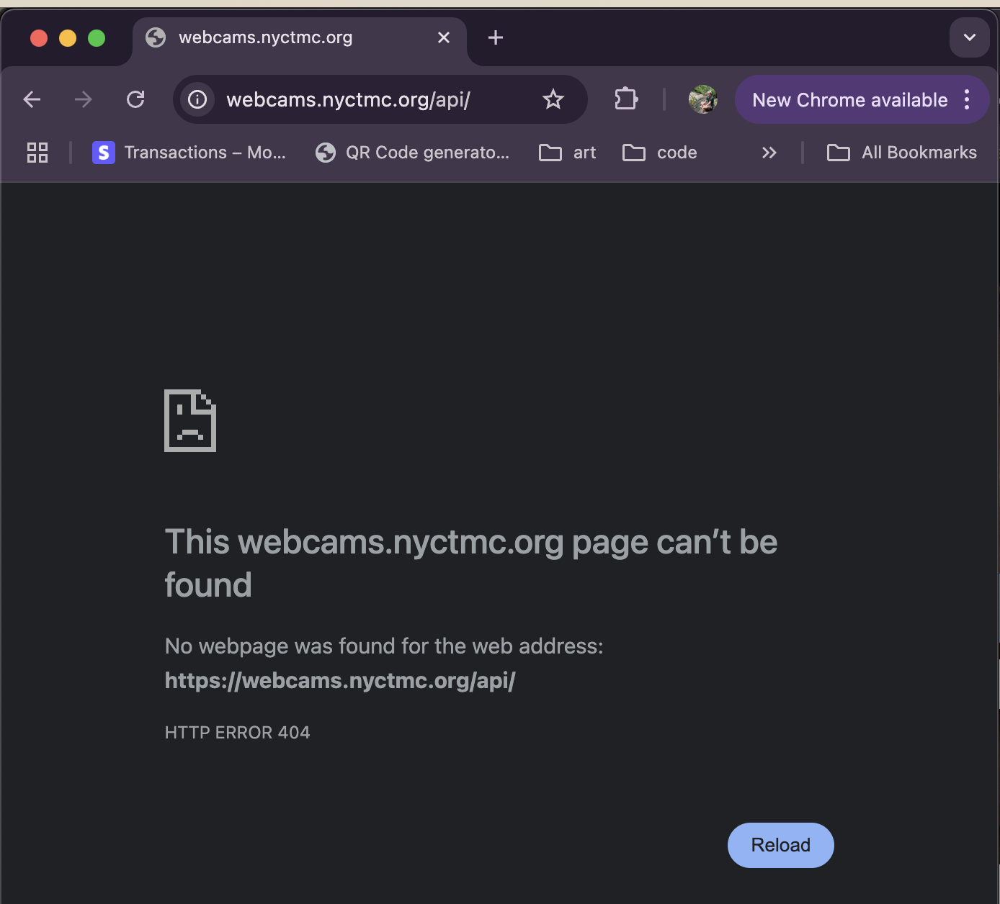

The Making of Traffic Cam Photobooth Part 2:
Scraping Government Data
In light of Traffic Cam Photobooth being nominated for a Webby (a voting link is live on my site), I wanted to do some small write-ups on how I made it. This is the second one, which previously appeared as a Twitter thread, and it's all about working with undocumented data.
TrafficCamPhotobooth.com currently supports taking selfies at over 2,000 traffic cameras internationally (well, 4 states and one camera in Ireland). When it blew up, however it only had 900 -- all of the ones in New York City. In Part 1, I briefly mentioned that "the NYC Department of Transportation hosted regularly updating, publicly available image feeds of their traffic cameras". This is not common knowledge. It's not an "Open Data" initiative, nor is there any information about them anywhere. How, then, was I able to get my hands on these feeds? The answer is a great (and accessible for beginners!) guide to data scraping.
All Their Data Are Belong To You
I think the biggest thing I wish I could get into people's heads is that they have more access to data than they realize. You own your computer. If there is data being displayed on your computer, you have access to it. This is true across anything that appears in your browser: website browser source code, user data, media, etc. It might not be pretty, it could be obscured, minified, hid behind auth, whatever, but it's definitely there.
Once you internalize this, you realize that you have a LOT more access to data than you thought. This truth is behind so many of my projects:
- The TikTok Clock, which scrapes the webpage of my TikTok analytics data to get the cumulative view-hours of my channel and compare it to my lifespan.
- blueNoteScrape, which monitors the Blue Note website for new ticket drops before they get announced.
- sheetMusicToVideoPDF, which converts youtube videos of sheet music into PDFs for me to use in practice.
- and more
Traffic Cam Photobooth is the same way, let's dive into how! If you want to, you can follow along with this guide yourself by opening the NYC DoT traffic camera website.
Scraping Government Data
Let's start at the beginning. Here's a screenshot of the NYC DoT Traffic Camera map.
Click to expand.
What do we notice here? Even without zooming, what can we figure out? Well we can see that...
- There are a bunch of markers on a map, which is appearing in a browser tab on our own computer, which means there is probably some big dataset on our device right now that holds each marker and its coordinates.
- Most of the markers are bunched together for ease of rendering, but there's a marker that's just a camera.
(1) tells us what to look for, and (2) gives us a good starting point for how to dig in. Let's follow the camera. If we click on the camera marker, we get this popup.
Click to expand.
Again, what do we notice here? The things that stand out are...
- A location, "Hyland Blvd @ Guyon Ave"
- An image that has:
- A picture from the traffic camera with...
- A timestamp on top of the picture
But wait... there's something else. If you're truly following along on the website, you'll notice something. The image is updating! Pretty frequently!

Click to expand.
Wait, so is this an image, or is a like sub-1 FPS video feed? Well, one way to find out. Let's right click on it and see what options we have. Do so and it says "open image." Cool, so it's indeed an image. It just gets updated every few seconds.
Hold up though, that's a bigger deal than it sounds. Our computer is getting pictures of a traffic camera at a fast and regular interval. That means, _we_ can get pictures of these traffic cameras at fast and regular intervals. This is the entire MO of TrafficCamPhotobooth.com!
But our browser getting these images for us and us grabbing them ourselves are two different things. How do we take this data into our own hands? Well, the data is right there in front of us, let's open the image in a new tab.
Click to expand.
Alright, at this point, you know the drill: looking at our browser, what do we see?
- The image, as was to be expected
- A pretty long address in the URL bar: "https://webcams.nyctmc.org/api/cameras/907af141-b289-47d3-9f41-edc7667cff7e/image?t=1743798376819"
URLs can tell you so much about accessing data. Let's break this one down.
- `webcams.nyctmc.org`, the domain
- `/api`, an API route, which appears to be public seeing that we have no trouble loading it
- `/cameras`, so there's an API route specifically for camera
- `907af141-b289-47d3-9f41-edc7667cff7e`, this looks like an id
- `/image`, requests the image specifically from the ID
- `?t=1743798376819`, a timestamp
My normal approach when I see a URL like this is just to delete stuff and see what changes or breaks. This helps me get information about what different parts of that URL do. We can get our first piece of information without deleting anything though. Just reload the page.
Click to expand.
Notice anything? We reloaded the same URL, but the image changed! So that tells me that our timestamp parameter (`?t=1743798376819`) doesn't access an image from a specific time, and is probably just used on the backend for logging which images get requested when.
Again, this innocuous fact conceals a much more useful truth: these URLs are static! They don't change! It's always the same URL (`https://webcams.nyctmc.org/api/cameras/[camera_id]/image[optional_time_parameter]`)! Every traffic camera has a publicly accessible and unchanging URL that you can request at any time to get its most recent (to the near second) image.
Great, so we can get this camera's picture whenever we want. Big W for us. Can we get any other stuff? Let's chop off the "/image" path: "https://webcams.nyctmc.org/api/cameras/907af141-b289-47d3-9f41-edc7667cff7e"
Click to expand.
Oh hey, we get a JSON! What's in here?
- `id`: the same ID we see in the url
- `name`: the name of the camera
- `latitude` and `longitude`: we knew these were gonna show up, these coordinates are how the icons are placed on the map.
- `area`: NYC borough
- `isOnline`: online status (they go down for maintenance)
- `imageURL`: slightly redundant, given that we already know it's just "this URL + /image" but nice to have
So now we know how to get all the available data and current image for *this* camera, how do we do it for *any* camera? You guessed it, let's lop off the next part of the URL (the ID) and see what happens: "https://webcams.nyctmc.org/api/cameras"

Click to expand.
Oh hey, a bigger JSON! This looks to be the motherload. It's an array of hundreds of camera objects, probably every one available on the DOT's website, which means every one in the city. Can I go any further? Can I lop off "/cameras"?
Click to expand.
No, I cannot, I get 404d, but I've gotten what I needed. In just 5 page loads, I have access to coordinates, image URLs, online status, and more for every traffic camera in the city.
That's a stat that's worth reinforcing. Let's recount each page load:
- load the map at https://webcams.nyctmc.org/map
- open the image from one of the icons in a new tab
- reload the image to see if the timestamp parameter in the URL matters
- remove the image path to see what other data the camera at that ID has
- remove the specific ID and see that information repeated for every ID
If I wanted to, say, make a site that allowed anyone to find their nearest traffic camera and take a picture with it, the data produced by this process would be sufficient. And it was! For the first several months of TrafficCamPhotobooth.com's existence I literally just pasted this entire JSON object at the top of the `script` tag. Check it out in the commit history. Ugly? Sure. An extremely performant way to give the user's device everything it needs to run the site and find all the relevant traffic cameras locally? You bet your ass.
Conclusion
I want to highlight that this is not a technical task. I didn't open any developer tools, nor did I write a single line of code. All I did was open an image, make observations, and delete stuff!
For years, my Twitter display name has been "No More Docile Users," and this is a great example of what I mean. Our browsers don't just _display_ the internet, they _request and interpret_ it. To render the map page, my browser had to ping the DoT's API and ask for all the data of all the cameras to put on the map. Because I can do anything my browser can do, I can get that information too. There are many ways to achieve that, and this is definitely one of the simpler ones, but the broader point is this: the data on your screen is always in your hands.
So go open up some images, mess with some URLs, and let me know what you find. The more active a participant you are in the way your devices and programs interact with the internet, the higher your agency on the web.
If you liked this post, please support me by voting for Traffic Cam Photobooth to win a Webby! Here's a big green button that brings you right to the voting page :)
Now nominated for a Webby!
➡️ ➡️ ➡️ ⬅️ ⬅️ ⬅️